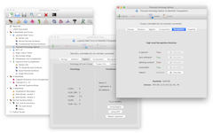
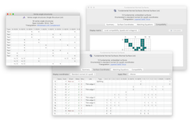
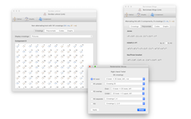
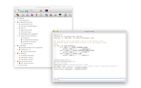

| macOS Version | Python 2.7 (System Python) |
Python 3.8 (Bundled with app) | |
|---|---|---|---|
| Big Sur (11.0) Catalina (10.15) Mojave (10.14) High Sierra (10.13) |
Download here | Download here — or — |
|
10 December 2021: Regina 7.0 is out! This is possibly the biggest overhaul that Regina has had in its 20+ year history. You can read more about what's new, or go ahead and download it!
For 3-manifolds, it includes high-level tasks such as 3-sphere recognition, connected sum decomposition and Hakenness testing, comes with a rich database of census manifolds, and incorporates the SnapPea kernel for working with hyperbolic manifolds. For 4-manifolds, it offers a range of combinatorial and algebraic tools, plus support for normal hypersurfaces. For knots and links, Regina can perform combinatorial manipulation, compute knot polynomials, and work with several import/export formats.
Regina comes with a full graphical user interface, as well as Python bindings and a low-level C++ programming interface.
See the users' handbook for a detailed list of features.
|  |  |
| Studying 3-manifold triangulations |
Normal surfaces and angle structures |
|  |  |
| Knots and links |
In-built Python scripting |
The following downloads are available:
|
All direct downloads come with SHA-1 checksums and SHA-256 checksums, signed with Ben Burton's GPG key.
If you encounter any problems when you run Regina, you can check the
troubleshooting page to
see if your problem is discussed there. You also most welcome
to contact us for help.
Mac
Regina comes with a universal app that runs natively
on both Intel and Apple Silicon machines.
On macOS you have several options. Here on the website there is a Python 2 build that uses the system /usr/bin/python, and a Python 3 build that comes bundled with its own copy of Python. There is also a Python 3 version on the App Store (free of course).
Not sure which version to get? Start with the App Store version (but read below).
macOS Version Python 2.7
(System Python)Python 3.8
(Bundled with app)Big Sur (11.0)
Catalina (10.15)
Mojave (10.14)
High Sierra (10.13)Download here Download here
— or —
There are some minor differences between the website and App Store versions. The App Store version:
Sandboxing is a security measure that comes with all App Store downloads: it ensures that apps only access files that you explicitly choose through the graphical file dialogs (Open, Save, etc.). For Regina, this means that when you open a Python console or run command-line tools (regina-python, regfiledump, etc.), the only personal files you can access are those in your Downloads folder. You can still access world-readable files, such as those in your Applications folder.
Windows
Regina on Windows uses a standard point-and-click installer.
Regina now offers separate 64-bit and 32-bit versions. Almost all modern machines are 64-bit, and this is probably the version you want. If you are not sure:
Windows Version 64-bit installer 32-bit installer Windows 10
Windows 8.1Download Download
When running the installer you may see a security warning,
such as “Microsoft Defender SmartScreen prevented an
unrecognized app from starting ...”, or a message from
SmartScreen Filter that
“This program might harm your computer”.
This is because Microsoft has not added Regina to its database of
known applications.
Click More info or More options
and you should be able to run the installer anyway.
GNU/Linux
You can download ready-made packages for several GNU/Linux distributions
through Regina's online package repositorites.
These repositories integrate with your native package manager
(apt, dnf/yum, zypper, etc.)
to help you keep Regina up-to-date automatically.
For instructions on setting up Regina's package repositories, click on the Install link for your system in the table below.
Regina's GNU/Linux packages are named regina-normal (to avoid conflicting with the other Regina).
Distribution Version Instructions Arch Linux Rolling release Install Debian 11.x (bullseye) Install 10.x (buster) unstable (sid) Fedora 34 Install 33 32 openSUSE Leap 15.2 Install Ubuntu 21.04 (hirsute) Install 20.10 (groovy) 20.04 LTS (focal) 18.04 LTS (bionic)
Most packages are built only for 64-bit Intel machines (i.e., amd64/x86_64 architectures) and 64-bit ARM machines (i.e., arm64/aarch64 architectures, which includes Apple Silicon). This covers almost any typical desktop or laptop nowadays. In addition, the Debian repositories and the Ubuntu 18.04 LTS repositorites also include packages for the 32-bit i386 architecture, and Debian unstable packages are available for every architecture in Debian.
For older versions of GNU/Linux:
For newer versions of GNU/Linux:
For other GNU/Linux distributions:
Watch this space!
SageMath
Matthias Goerner has kindly prepared a PyPI package that allows
Regina to be used with SageMath.
This includes the Python interface to Regina's mathematical engine,
but does not include Regina's graphical user interface or
command-line tools.
SageMath Version Instructions Any Install
Of course, whilst the packages are written to work with any modern version
of SageMath, your experiences might vary (particular with an older SageMath
and/or operating system). Follow the instructions link above for details.
Source code
For other systems not listed above, you will need to build Regina from its source code.
You can download the source code here.
Please see the separate page on building Regina for instructions on how to build Regina and what libraries and tools you will need to have installed.
You can read the handbook from within Regina by selecting Help → Regina Handbook from the menu. You can also read it here online.
You can read the API documentation by selecting Help → Python API Reference from the menu. You can also read it here online.
This is a service release for version 6.0: it fixes an issue for Python users where the Triangulation3 constructor could become unusable in the graphical user interface. This issue did not affect command-line users (e.g., regina-python or SageMath users).
If you missed Regina 6.0 (January 2021) and 5.96 (December 2020), these were a major overhaul from the much older version 5.1:
Many others have been of assistance with this project, be it through time, knowledge, testing or code. Please see the full list of acknowledgements in the users' handbook.
Benjamin A. Burton, Ryan Budney, William Pettersson, et al.,Or, in BibTeX:
Regina: Software for low-dimensional topology,
http://regina-normal.github.io/, 1999–2021.
@misc{regina,
author = {Benjamin A. Burton and Ryan Budney and William Pettersson and others},
title = {Regina: Software for low-dimensional topology},
howpublished = {{\tt http://\allowbreak regina-normal.\allowbreak github.\allowbreak io/}},
year = {1999--2021}}
This program is free software; you can redistribute it and/or modify it under the terms of the GNU General Public License as published by the Free Software Foundation; either version 2 of the License, or (at your option) any later version.
Some of this code comes with additional permissions, which allow it to be distributed through online repositories such as Apple's App Store or Google Play. See the full license in the users' handbook for details.
This program is distributed in the hope that it will be useful, but WITHOUT ANY WARRANTY; without even the implied warranty of MERCHANTABILITY or FITNESS FOR A PARTICULAR PURPOSE. See the GNU General Public License for more details.
You should have received a copy of the GNU General Public License along with this program; if not, write to the Free Software Foundation, Inc., 51 Franklin St, Fifth Floor, Boston, MA 02110-1301, USA.
For complete license details, including the full GNU General Public License and information on external software that Regina uses, see the full license in the users' handbook.
If you have written your own extensions that you think could be worth putting in the main release, please do write and let us know.
Even if you have no comments to make, it's always nice to hear from people using Regina, even if it's just to say hi. We're always interested to hear how this software is being used.
You can contact us by email: our websites are linked to our names in the author list above.


{kind=link}
{kind=link}
{kind=link}
{kind=link}